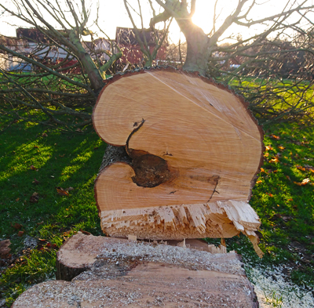

<div>
    <div class="about-container">
        <div class="row">
            <div class="div-text-img">
                
                <p class="bio-text">
                    Before becoming a software developer, my professional life has always revolved around trees. <br />
                    The structures and shapes of wood and the pathogens and conditions that affect and delimit its
                    growth have always had an impact on me and at the end of 2019 I started printing these patterns in
                    paper. <br /><br />
                    All my work comes from diseased trees or trees with structural imperfections that must be felled for
                    safety.
                </p>
            </div>
        </div>

        <div class="div-text-img">
            <div class="row">
                <p class="bio-text">
                    I rescue the wood from becoming firewood or ending up decomposed on the ground. In this way, the
                    tree has a chance to leave a mark after its physical body has disappeared allowing us to appreciate
                    its life history and the beauty within wood growth.<br />
                </p>
                
            </div>
        </div>

        <p class="bio-text">
            In my prints one can see the marks left by pathologies, age growth, the good years and those that lacked
            water or sunlight, the imprint that physical objects left in the trunk when the tree grew over them, the
            formation and physiology of wood structures such as branches and many other details.
        </p>
        <p class="bio-text">
            The engraving occurs thanks to the difference in density of the wood that grows in the rings during spring
            and fall. In the warmer months, the rings grow fast accumulating nutrients and the growth slows down in the
            months with reduced sun hours (although evergreens' growth is slightly different and so are their wood's
            properties). This affects the hardness of the rings.
        </p>

        <div class="div-text-img">
            <div class="row">
                
                <p class="bio-text">
                    My prints are organic, I couldn't make two the same even if I wanted to. Each print is unique and
                    slightly different even if there are several based on the same piece of wood. My editions are open
                    and the colours and type of paper can be modified to suit individual taste.
                </p>
            </div>
        </div>

        <p class="bio-text centered">
            Thank you for taking the time to look at my work.
        </p>
    </div>
</div>